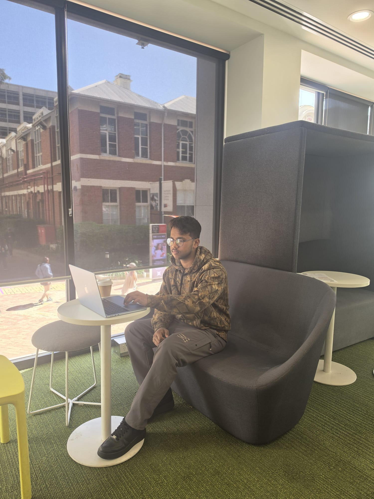

My Favorite Campus Discovery: The Library Study Pods
Since starting my semester, the best student-friendly space I’ve discovered on campus is the collection of acoustic study pods located near the large windows overlooking the courtyard. It is a fantastic spot equipped with comfortable, high-backed privacy couches, small personal tables, and nearby charging outlets.
My personal experience here has been brilliant. Whenever I have a gap between classes or need a distraction-free zone to focus on writing code, I grab a coffee and head straight to these booths. It gives you a perfect view of the outdoor brick courtyard while keeping you comfortable and productive. I highly recommend it to future students who need a balanced space to study independently without feeling isolated.
About This Selection
Why I chose this specific photo: I chose this image because it perfectly reflects the reality of everyday student life at the Hawthorn campus. It shows the comfortable, modern facilities Swinburne provides for independent learning and highlights exactly how I spend my downtime staying on top of my course requirements.
Featured Campus Photo
